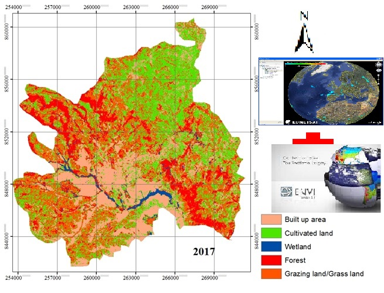

<!-- This is one possible solution -->
<h1>My Additional Works</h1>
<h2>Research Works on Gilgel Gibe Catchment</h2>


  <hr />

<h3>Softwares I used</h3>
<ul>
  <li>AcrGIS</li>
  <li>Envi5.1 (Environment for Visualization version 5.1)</li>
  <li>Google Earth</li>
</ul>

<h3>The link for Google Earth</h3>
<a
  href="https://www.google.com/maps/@35.7040744,139.5577317,3a,75y,289.6h,87.01t,0.72r/data=!3m6!1e1!3m4!1sgT28ssf0BB2LxZ63JNcL1w!2e0!7i13312!8i6656">Google
  map link</a>